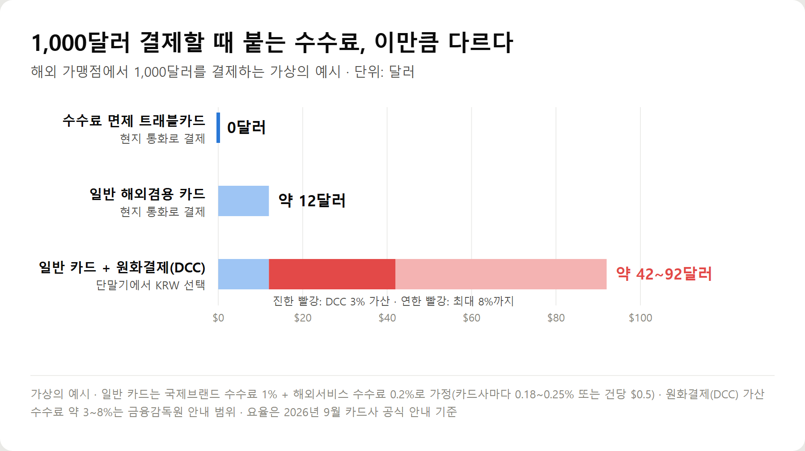
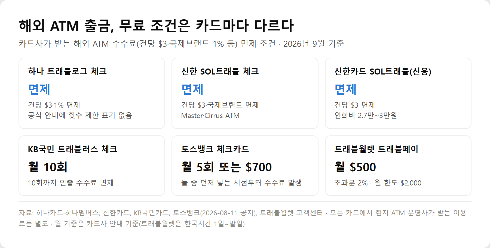

<meta charset="utf-8">
<title>해외여행 카드 비교 2026 — 해외결제 수수료·ATM 무료 조건 — 나의 투자 그리고 행복한 여행</title>
<meta name="description" content="해외여행 카드 추천 2026: 하나 트래블로그·신한 SOL트래블·KB 트래블러스·토스뱅크·트래블월렛 등 6종의 해외결제 수수료, 환전 우대, 해외 ATM 출금 무료 조건, 신용카드와 체크카드 차이, DCC 차단법 정리.">
<meta name="viewport" content="width=device-width, initial-scale=1">
<link rel="canonical" href="https://worldtraveler1.tistory.com/80">
<link rel="preconnect" href="https://fonts.googleapis.com">
<link rel="preconnect" href="https://fonts.gstatic.com" crossorigin>
<link rel="stylesheet" href="https://fonts.googleapis.com/css2?family=Hahmlet:wght@400;600;800&family=IBM+Plex+Mono:wght@400;500&family=IBM+Plex+Sans+KR:wght@300;400;500;600&display=swap">

<style>
  :root{
    --paper:#F2EEE6;--surface:#FAF8F3;--surface-2:#E7E1D5;
    --ink:#191510;--ink-2:#4A4235;--ink-3:#7D7364;
    --line:#D6CEBF;--line-soft:#E4DDD0;--accent:#B06A15;--accent-bright:#C2761A;
    --up:#E5484D;--down:#3B82F6;
    --f-display:"Hahmlet",'Nanum Myeongjo',"Apple SD Gothic Neo",serif;
    --f-body:"IBM Plex Sans KR","Apple SD Gothic Neo","Malgun Gothic",sans-serif;
    --f-mono:"IBM Plex Mono","SFMono-Regular",Consolas,monospace;
    --pad:clamp(20px,5vw,64px);
  }
  @media (prefers-color-scheme:dark){
    :root:not([data-theme="light"]){
      --paper:#0B1120;--surface:#121A2C;--surface-2:#1A2439;
      --ink:#E9EEF7;--ink-2:#A9B5C9;--ink-3:#72809A;
      --line:#26314A;--line-soft:#1D2739;--accent:#E8A33D;--accent-bright:#F0B45C;
    }
  }
  *{box-sizing:border-box;}
  body{margin:0;background:var(--paper);color:var(--ink);font-family:var(--f-body);
    font-weight:300;font-size:1rem;line-height:1.75;-webkit-font-smoothing:antialiased;}
  a{color:inherit;}
  img{max-width:100%;height:auto;}
  .wrap{max-width:760px;margin:0 auto;padding-inline:var(--pad);}
  .nav{position:sticky;top:0;z-index:20;background:color-mix(in srgb,var(--paper) 88%,transparent);
    backdrop-filter:saturate(180%) blur(12px);border-bottom:1px solid var(--line);}
  .nav-in{display:flex;align-items:center;justify-content:space-between;height:58px;}
  .brand{font-family:var(--f-display);font-weight:600;font-size:1rem;letter-spacing:-.02em;text-decoration:none;}
  .back{font-family:var(--f-mono);font-size:.72rem;color:var(--ink-3);text-decoration:none;}
  .article{padding-block:clamp(40px,7vw,72px) clamp(56px,9vw,96px);}
  .eyebrow{font-family:var(--f-mono);font-size:.68rem;letter-spacing:.16em;text-transform:uppercase;
    color:var(--accent);margin:0 0 14px;}
  h1{font-family:var(--f-display);font-weight:800;font-size:clamp(1.6rem,4.4vw,2.3rem);
    line-height:1.3;letter-spacing:-.03em;margin:0 0 16px;}
  .byline{font-family:var(--f-mono);font-size:.72rem;color:var(--ink-3);
    padding-bottom:24px;border-bottom:1px solid var(--line);margin-bottom:32px;}
  h2{font-family:var(--f-display);font-weight:600;font-size:1.25rem;letter-spacing:-.02em;margin:42px 0 14px;}
  h3{font-family:var(--f-display);font-weight:600;font-size:1.05rem;letter-spacing:-.02em;
    margin:30px 0 10px;padding-top:14px;border-top:1px solid var(--line-soft);}
  h3 .code{font-family:var(--f-mono);font-size:.7rem;font-weight:400;color:var(--ink-3);margin-left:6px;}
  p{margin:0 0 18px;color:var(--ink-2);}
  ul.checks{margin:0 0 18px;padding-left:20px;color:var(--ink-2);}
  ul.checks li{margin-bottom:8px;font-size:.94rem;}
  table{width:100%;border-collapse:collapse;font-size:.88rem;margin-bottom:8px;}
  th{font-family:var(--f-mono);font-size:.66rem;letter-spacing:.06em;text-transform:uppercase;
    color:var(--ink-3);text-align:right;padding:8px 6px;border-bottom:1px solid var(--line);}
  th:first-child{text-align:left;}
  td{padding:10px 6px;border-bottom:1px solid var(--line-soft);color:var(--ink-2);}
  td.num{font-family:var(--f-mono);text-align:right;font-variant-numeric:tabular-nums;}
  td.up{color:var(--up);} td.down{color:var(--down);}
  .scroll{overflow-x:auto;}
  figure{margin:22px 0;}
  figure img{display:block;border-radius:3px;background:var(--surface-2);}
  figcaption{margin-top:8px;font-family:var(--f-mono);font-size:.68rem;color:var(--ink-3);text-align:center;}
  .note{margin-top:34px;padding:16px 18px;border-left:3px solid var(--accent);
    background:var(--surface);border-radius:0 3px 3px 0;}
  .note p{margin:0;font-size:.85rem;color:var(--ink-3);}
  .foot{border-top:1px solid var(--line);background:var(--surface);padding-block:30px 38px;}
  .foot p{margin:0;font-size:.8rem;color:var(--ink-3);}
</style>

<nav class="nav">
  <div class="wrap nav-in">
    <a class="brand" href="../index.html">나의 투자 그리고 행복한 여행</a>
    <a class="back" href="../index.html#stocks">← 시황으로</a>
  </div>
</nav>

<main class="wrap article">
  <p class="eyebrow">Market</p>
  <h1>해외여행 카드 비교 2026 — 해외결제 수수료·환전 우대·해외 ATM 무료 조건 정리 (9월 기준)</h1>
  <p class="byline">여행 · 2026-09-17 기준</p>

  <p>한 줄 요약: 해외 결제용으로는 수수료 면제 트래블 체크카드 1장, 비상용과 보증금용으로는 해외겸용 신용카드 1장을 챙기는 조합이 가장 무난합니다. 카드마다 차이가 크게 나는 부분은 해외 ATM 무료 조건입니다.</p>
  <p>하나카드·신한카드·KB국민카드·토스뱅크·트래블월렛 공식 안내와 금융감독원 해외원화결제(DCC) 안내를 2026년 9월 17일에 확인해 정리한 기록입니다.</p>
  <h2>해외여행 카드, 결론부터</h2>
  <ul class="checks">
    <li>요즘 트래블 체크카드는 해외결제 수수료(국제브랜드 1% + 해외서비스 수수료)를 대부분 면제한다</li>
    <li>카드마다 가장 크게 다른 건 해외 ATM 무료 조건이다 — 제한 없이 면제, 월 10회, 월 5회 또는 700달러, 월 500달러까지 등</li>
    <li>환전 우대는 통화 범위가 다르다. 주요 통화(달러·엔·유로)는 대부분 100% 우대지만 그 외 통화는 카드별로 확인한다</li>
    <li>공항 라운지는 전월 국내 실적 조건이 붙는다 — 체크카드 30만원, 신용카드 40만원 이상 등</li>
    <li>결제 단말기에서 '원화(KRW)'를 고르면 수수료 면제 카드라도 3~8%가 더 붙을 수 있다</li>
    <li>카드는 최소 2장. 트래블 체크카드 1장 + 해외겸용 신용카드 1장, 국제브랜드는 서로 다르게</li>
  </ul>
  <h2>해외여행에서 카드가 중요한 이유</h2>
  <p>현금은 쓰는 만큼만 들고 갈 수 있고, 잃어버리면 돌려받을 방법이 거의 없습니다. 카드는 분실해도 앱에서 바로 정지하면 되고, 결제 내역이 남아 여행 경비를 정리하기도 쉽습니다.</p>
  <p>환전은 출국 전에 환율을 확정한다는 장점이 있습니다. 대신 남은 외화를 다시 원화로 바꿀 때 손해가 나고, 필요한 금액을 미리 정확히 알기 어렵습니다.</p>
  <p>트래블카드는 이 둘의 중간입니다. 앱에서 필요한 만큼만 외화로 충전하고, 현지에서는 카드로 결제하거나 ATM에서 현지 통화로 뽑습니다.</p>
  <div style="overflow-x:auto"><table border="1" cellpadding="6" style="border-collapse:collapse;width:100%;font-size:14px;line-height:1.5"><thead><tr><th style="background:#f3f5f8">방식</th><th style="background:#f3f5f8">장점</th><th style="background:#f3f5f8">단점</th><th style="background:#f3f5f8">맞는 경우</th></tr></thead><tbody><tr><td>현금 환전</td><td>환율 확정, 카드 안 받는 곳에서 사용</td><td>분실 시 복구 불가, 재환전 손실</td><td>시장·노점·팁, 도착 첫날 교통비</td></tr><tr><td>일반 신용카드</td><td>한도 넉넉함, 호텔 보증금 가능</td><td>해외결제 수수료 1% 이상이 붙는 경우가 많음</td><td>호텔·렌터카 보증금, 비상용</td></tr><tr><td>트래블 체크카드</td><td>해외결제·환전 수수료 면제, 필요한 만큼 충전</td><td>충전한 잔액까지만 결제, ATM 무료 조건 제한</td><td>일상 결제, 현지 ATM 출금</td></tr></tbody></table></div>
  <p>카드를 여러 장 준비해야 하는 이유도 여기서 나옵니다. 가게에 따라 특정 국제브랜드가 안 되거나, 카드가 ATM에 먹히거나, 호텔이 체크카드로는 보증금을 받지 않는 경우가 있습니다.</p>
  <h2>해외결제 수수료, 어떻게 붙나</h2>
  <p>해외에서 카드로 결제하면 청구 금액은 크게 세 가지로 이뤄집니다.</p>
  <div class="note"><p>청구 금액 = 결제 금액(환율 적용) + 국제브랜드 수수료 + 카드사 해외서비스 수수료</p></div>
  <ul class="checks">
    <li>국제브랜드 수수료 — Visa·Mastercard 같은 해외 결제망 회사가 받는 수수료. 이번에 확인한 카드들은 결제 금액의 1%로 안내한다</li>
    <li>해외서비스 수수료 — 국내 카드사가 받는 수수료. 신한 0.2%(신용카드 0.18%), KB 0.25%처럼 비율이거나, 하나·토스뱅크처럼 결제 건당 0.5달러로 받는다</li>
    <li>환율 — 원화로 바로 청구되는 카드는 카드사가 매입하는 시점의 환율이, 미리 외화를 충전하는 트래블카드는 충전할 때의 환율이 적용된다</li>
  </ul>
  <p>트래블카드가 '수수료 0원'이라고 할 때 면제되는 건 주로 앞의 두 수수료입니다. 카드사마다 요율과 면제 범위가 다르므로 카드별 공식 안내를 기준으로 봐야 합니다.</p>
  <figure><figcaption>1,000달러를 해외에서 결제할 때 붙는 수수료 비교 (가상의 예시, 요율은 2026년 9월 카드사 공식 안내 기준)</figcaption></figure>
  <p>위 그림처럼 수수료 면제 카드와 일반 카드의 차이는 1,000달러에 12달러 안팎입니다. 그런데 원화 결제(DCC)를 한 번 고르면 그 차이가 순식간에 몇 배로 커집니다. 이 부분은 뒤에서 따로 설명합니다.</p>
  <h2>해외여행 카드 추천 비교 — 6종 조건 한눈에 (2026년 9월 기준)</h2>
  <p>현재 발급 가능하고 공식 페이지에서 조건을 확인할 수 있었던 카드만 넣었습니다. 순위가 아니라 조건 비교입니다.</p>
  <div style="overflow-x:auto"><table border="1" cellpadding="6" style="border-collapse:collapse;width:100%;font-size:14px;line-height:1.5"><thead><tr><th style="background:#f3f5f8">카드</th><th style="background:#f3f5f8">연회비</th><th style="background:#f3f5f8">해외결제 수수료</th><th style="background:#f3f5f8">해외 ATM</th><th style="background:#f3f5f8">주요 혜택</th><th style="background:#f3f5f8">조건</th><th style="background:#f3f5f8">특징</th></tr></thead><tbody><tr><td>하나 트래블로그 체크</td><td>없음</td><td>면제 (국제브랜드 1%·건당 $0.5)</td><td>인출 수수료 면제 ($3·1%)</td><td>무료환전 상시 4종(USD·JPY·EUR·GBP), 54종은 2026-12-31까지</td><td>하나머니에 외화 충전 후 사용</td><td>Mastercard·UnionPay 선택, 국내 0.3% 적립</td></tr><tr><td>신한 SOL트래블 체크</td><td>없음</td><td>면제 (1%·0.2%)</td><td>인출 수수료 면제 ($3·국제브랜드)</td><td>공항 라운지 반기 1회, 해외 대중교통 1% 캐시백(월 3천원)</td><td>라운지는 전월 국내 30만원 이상</td><td>Mastercard, 만 14세 이상</td></tr><tr><td>KB국민 트래블러스 체크</td><td>없음</td><td>면제 (1%·0.25%)</td><td>월 10회까지 면제</td><td>해외 가맹점 10% 할인(월 1만원)</td><td>할인은 전월 20만원 이상</td><td>Mastercard, KB Pay 외화머니·외화통장 연결</td></tr><tr><td>토스뱅크 체크카드</td><td>별도 안내 없음</td><td>면제 (1%·건당 $0.5), 2026-08-11부터</td><td>월 5회 또는 $700까지 면제</td><td>자동환전 환율우대 100%</td><td>토스뱅크 외화통장을 해외 결제 계좌로 연결</td><td>기존 해외결제 2% 캐시백은 종료</td></tr><tr><td>트래블월렛 트래블페이</td><td>없음</td><td>결제 수수료 0%</td><td>월 $500까지 무료, 초과분 2%</td><td>USD·EUR·JPY 환전 수수료 0%, 46개 통화</td><td>ATM 한도 1회 $400·1일 $1,000·월 $2,000</td><td>충전식 선불카드, VISA</td></tr><tr><td>신한카드 SOL트래블 (신용)</td><td>국내전용 2.7만원 / 해외겸용 3만원</td><td>면제 (1%·0.18%)</td><td>인출 수수료 면제 ($3)</td><td>환율 100% 우대, 해외 0.5% 적립, 라운지 연 3회</td><td>대부분 전월 국내 40만원 이상(발급 후 1개월은 조건 없음)</td><td>신용카드라 보증금·비상용으로도 사용</td></tr></tbody></table></div>
  <p>표의 'ATM 수수료 면제'는 카드사가 받는 수수료가 면제된다는 뜻입니다. <b>현지 ATM 운영사가 따로 받는 이용료는 모든 카드에서 별도</b>로 붙을 수 있습니다.</p>
  <figure><figcaption>해외 ATM 출금 수수료 무료 조건 카드별 비교 (2026년 9월 카드사·발행사 공식 안내 기준)</figcaption></figure>
  <h2>나에게 맞는 해외여행 카드 — 여행 유형별</h2>
  <div style="overflow-x:auto"><table border="1" cellpadding="6" style="border-collapse:collapse;width:100%;font-size:14px;line-height:1.5"><thead><tr><th style="background:#f3f5f8">이런 사람</th><th style="background:#f3f5f8">먼저 볼 조건</th><th style="background:#f3f5f8">맞는 카드 예</th></tr></thead><tbody><tr><td>해외결제가 많은 사람</td><td>결제 수수료 면제 + 환전 우대 통화 범위</td><td>하나 트래블로그, 신한 SOL트래블 체크, 토스뱅크</td></tr><tr><td>해외 ATM을 자주 쓰는 사람</td><td>월 횟수·금액 제한이 없는지</td><td>하나 트래블로그, 신한 SOL트래블 체크 (KB는 월 10회)</td></tr><tr><td>공항 라운지를 원하는 사람</td><td>라운지 횟수와 전월 실적</td><td>신한 SOL트래블 체크(반기 1회), SOL트래블 신용(연 3회)</td></tr><tr><td>연회비가 싫은 사람</td><td>연회비 없는 체크·선불카드</td><td>트래블로그, SOL트래블 체크, 트래블러스, 트래블페이</td></tr><tr><td>장기여행자</td><td>ATM 월 한도와 초과 수수료, 카드 2장 이상</td><td>ATM 무제한 면제 카드 + 다른 브랜드 카드 1장</td></tr><tr><td>단기여행자</td><td>주요 통화 환전 우대, 발급 기간</td><td>이미 쓰는 은행 계열 트래블 체크카드</td></tr></tbody></table></div>
  <p>발급에는 시간이 걸립니다. 출국이 2주 안쪽이라면 새 카드 혜택보다 <b>제때 받을 수 있는 카드</b>를 먼저 고르는 게 현실적입니다.</p>
  <h2>해외여행 신용카드 vs 체크카드</h2>
  <div style="overflow-x:auto"><table border="1" cellpadding="6" style="border-collapse:collapse;width:100%;font-size:14px;line-height:1.5"><thead><tr><th style="background:#f3f5f8">항목</th><th style="background:#f3f5f8">신용카드</th><th style="background:#f3f5f8">체크카드(트래블카드)</th></tr></thead><tbody><tr><td>해외결제</td><td>일반 카드는 수수료가 붙고, 해외 특화 신용카드는 면제</td><td>대부분 결제 수수료 면제</td></tr><tr><td>환율</td><td>카드사 매입 시점 환율로 원화 청구</td><td>충전할 때 환율로 확정, 주요 통화 100% 우대</td></tr><tr><td>ATM</td><td>현금서비스로 처리되면 이자가 붙을 수 있어 주의</td><td>내 외화 잔액에서 출금, 무료 조건 안에서는 수수료 면제</td></tr><tr><td>보안</td><td>부정사용 시 카드사 보상 절차가 있음</td><td>충전한 금액만 노출돼 피해 범위가 제한됨</td></tr><tr><td>소비관리</td><td>한도가 커서 과소비 위험</td><td>충전한 만큼만 써서 예산 관리가 쉬움</td></tr><tr><td>장기여행</td><td>호텔·렌터카 보증금, 큰 결제용으로 필요</td><td>일상 결제·현금 인출의 주력 카드</td></tr><tr><td>단기여행</td><td>비상용 1장이면 충분</td><td>이것 하나로 대부분 해결</td></tr></tbody></table></div>
  <p>정리하면 체크카드가 주력, 신용카드가 보조입니다. 호텔 체크인이나 렌터카처럼 보증금 승인이 걸리는 곳에서는 신용카드를 요구하는 경우가 많아, 신용카드를 한 장도 안 가져가면 곤란해질 수 있습니다.</p>
  <h2>해외 ATM에서 현금 뽑는 방법</h2>
  <p>처음 해외 ATM 앞에 서면 영어 화면과 낯선 선택지 때문에 긴장하게 됩니다. 순서만 알면 국내 ATM과 크게 다르지 않습니다.</p>
  <ul class="checks">
    <li>1단계 ATM 찾기 — 공항·은행 지점 안·쇼핑몰 안 ATM을 고른다. 길거리 단독 기기보다 카드 복제 위험이 낮고, 기계가 카드를 삼켜도 은행에 바로 문의할 수 있다</li>
    <li>2단계 브랜드 확인 — 기기에 내 카드의 국제브랜드 로고(Mastercard·Cirrus, VISA·PLUS 등)가 붙어 있는지 본다</li>
    <li>3단계 카드 넣고 언어 선택 — 대부분 English를 고를 수 있다</li>
    <li>4단계 PIN 입력 — 해외 ATM은 비밀번호 4자리를 묻는 경우가 많다. 국내 비밀번호가 4자리라면 그대로 넣는다. 출국 전 카드사 앱에서 해외 사용과 비밀번호를 확인해 둔다</li>
    <li>5단계 계좌 종류 — Checking / Savings / Credit 중 체크카드는 보통 Checking 또는 Savings. Credit을 고르면 신용카드 현금서비스로 처리될 수 있다</li>
    <li>6단계 금액 선택 — 현지 통화로 금액을 고른다. 트래블카드는 충전한 외화 잔액과 ATM 1회 한도 안에서 뽑는다</li>
    <li>7단계 환율 선택 화면 — 'Without conversion' 또는 현지 통화 쪽을 고른다. 'With conversion'이나 원화(KRW) 환산을 받아들이면 DCC가 적용된다</li>
    <li>8단계 현지 운영사 수수료 안내 — 기기가 자체 수수료를 안내하면 금액을 확인하고 진행 여부를 정한다</li>
    <li>9단계 카드와 현금 챙기기 — 카드를 먼저 돌려주는 기기가 많다. 카드 두고 가는 실수가 가장 흔하다</li>
  </ul>
  <h2>DCC(해외원화결제)란, 그리고 막는 방법</h2>
  <p>DCC는 해외 가맹점이나 ATM이 현지 통화 대신 <b>원화로 환산해서 결제</b>해 주는 서비스입니다. 원화 금액이 바로 보여 편해 보이지만, 금융감독원 안내에 따르면 환산 환율에 약 <b>3~8%의 수수료</b>가 가산될 수 있습니다.</p>
  <p>수수료 면제 트래블카드를 써도 DCC를 고르면 이 비용은 그대로 붙습니다. 결제 수수료를 아끼려고 카드를 바꿔 놓고, 결제 순간에 더 큰 돈을 내는 셈입니다.</p>
  <ul class="checks">
    <li>카드 단말기나 ATM이 'KRW / 현지 통화'를 물으면 항상 현지 통화를 고른다</li>
    <li>호텔·면세점·온라인 결제에서도 원화 금액을 보여주면 현지 통화로 바꿔 달라고 요청한다</li>
    <li>카드사 앱·홈페이지·고객센터에서 '해외원화결제 차단 서비스'를 신청해 두면 원화 결제 시도 자체가 승인 거절된다 (무료)</li>
  </ul>
  <h2>해외여행 카드 결제 주의사항 — 놓치기 쉬운 것</h2>
  <p>트래블카드 비교 글은 대부분 수수료 면제에서 끝납니다. 실제로 여행 중에 돈이 새거나 곤란해지는 지점은 그 다음에 있습니다.</p>
  <ul class="checks">
    <li>현지 ATM 운영사 수수료는 어떤 카드도 면제해 주지 않는다 — 수수료가 없는 은행 ATM을 찾아 한 번에 필요한 만큼 뽑는 편이 낫다</li>
    <li>'월 10회', '월 5회 또는 700달러', '월 500달러'는 한국시간 기준 달이 바뀌어야 초기화된다 — 월말에 출발하는 장기여행이면 두 달에 걸쳐 나눠 쓸 수 있다</li>
    <li>무료환전 통화 범위 밖이면 환전 수수료가 붙는다 — 동남아·중남미·코카서스 지역 통화는 출국 전에 카드 앱에서 해당 통화가 우대 대상인지 확인한다</li>
    <li>호텔·렌터카·주유소는 결제 금액보다 큰 금액을 먼저 승인(가승인)한다 — 체크카드면 그만큼 잔액이 묶이므로 신용카드를 쓰는 편이 편하다</li>
    <li>라운지 혜택의 '전월 실적'은 대부분 국내 이용금액이다 — 해외에서 쓴 금액은 실적에 안 들어가는 경우가 많다</li>
    <li>혜택에는 기한이 있다 — 하나 트래블로그 54종 무료환전은 2026년 12월 31일까지, 토스뱅크는 2026년 8월 11일부터 캐시백이 수수료 면제로 바뀌었다</li>
  </ul>
  <h2>해외에서 카드를 분실했을 때</h2>
  <ul class="checks">
    <li>카드사 앱에서 바로 분실 신고 또는 일시 정지를 한다. 트래블카드는 앱에서 잠금이 가장 빠르다</li>
    <li>앱을 쓸 수 없으면 카드사 해외 분실신고 전화를 이용한다 — 출국 전 카드사 앱이나 홈페이지에서 번호를 캡처해 둔다</li>
    <li>외화 잔액이 남은 트래블카드는 정지 후 앱에서 원화로 되돌리거나 재발급을 신청한다</li>
    <li>지갑째 잃어버려 연락이 어렵다면 영사콜센터(02-3210-0404, 24시간)에 도움을 요청할 수 있다</li>
    <li>그래서 카드는 한 지갑에 모아 두지 않는다. 주력 카드와 예비 카드를 다른 가방에 나눠 둔다</li>
  </ul>
  <h2>출국 전 해외여행 카드 체크리스트</h2>
  <ul class="checks">
    <li>트래블 체크카드 1장 + 해외겸용 신용카드 1장 (국제브랜드는 서로 다르게, 예: Mastercard + VISA)</li>
    <li>카드사 앱에서 해외 결제 허용, 해외원화결제 차단 서비스 신청</li>
    <li>해외 ATM 비밀번호 확인</li>
    <li>여행 통화가 무료환전·우대 대상인지 확인하고, 첫 며칠 쓸 금액만 먼저 충전</li>
    <li>ATM 무료 조건(횟수·금액)과 1일 출금 한도 메모</li>
    <li>카드사 해외 분실신고 번호와 영사콜센터 번호 저장</li>
    <li>현지 교통비·팁용 소액 현금 약간</li>
  </ul>
  <h2>해외여행 카드 자주 묻는 질문</h2>
  <p>Q. 해외결제 수수료 없는 카드면 환전은 안 해도 되나요?</p>
  <p>대부분 결제는 카드로 해결되지만, 카드를 안 받는 시장·노점이나 도착 직후 교통비를 위해 소액 현금은 있는 편이 좋습니다. 현금이 더 필요하면 현지 ATM에서 트래블카드로 뽑으면 됩니다.</p>
  <p>Q. 해외여행 환전과 카드 결제 중 어느 쪽이 더 싼가요?</p>
  <p>주요 통화(달러·엔·유로)는 트래블카드 환율 100% 우대와 결제 수수료 면제가 적용되면 카드 쪽이 유리한 경우가 많습니다. 우대 대상이 아닌 통화는 카드별 환전 수수료를 확인해야 하고, DCC를 고르면 어떤 방식보다 비싸집니다.</p>
  <p>Q. 해외 ATM 수수료가 면제라고 했는데 수수료가 빠져나갔어요.</p>
  <p>카드사가 면제하는 건 국제브랜드 수수료와 건당 해외 이용 수수료입니다. 현지 ATM 운영사가 따로 받는 이용료는 면제 대상이 아니며, 월 횟수나 금액 조건을 넘긴 경우에도 수수료가 붙습니다.</p>
  <p>Q. 해외여행 카드는 몇 장 가져가야 하나요?</p>
  <p>최소 2장, 가능하면 국제브랜드를 다르게 가져가는 게 안전합니다. 카드 하나가 가맹점·ATM에서 안 되거나 분실됐을 때 여행이 멈추지 않게 하기 위해서입니다.</p>
  <p>Q. 신용카드로 해외 ATM에서 돈을 뽑아도 되나요?</p>
  <p>신용카드로 뽑으면 현금서비스로 처리될 수 있어 수수료와 이자가 붙을 수 있습니다. 현금 인출은 외화를 충전해 둔 트래블 체크카드로 하는 편이 비용이 적습니다.</p>
  <p>Q. 해외 카드 결제 환율은 언제 기준으로 적용되나요?</p>
  <p>외화를 미리 충전하는 트래블카드는 충전할 때 환율이 적용됩니다. 원화로 바로 청구되는 일반 카드는 결제한 날이 아니라 카드사가 매입하는 시점의 환율로 계산돼, 결제 당일 환율과 차이가 날 수 있습니다.</p>
  <h2>정리하면</h2>
  <p>해외여행 카드는 '어느 카드가 최고냐'보다 <b>내 여행에서 어떤 수수료가 생기느냐</b>로 골라야 합니다. 결제 수수료는 요즘 트래블카드 대부분이 면제하니, 차이는 ATM 무료 조건과 환전 우대 통화, 라운지 실적 조건에서 납니다.</p>
  <p>주력은 수수료 면제 트래블 체크카드, 보조는 브랜드가 다른 해외겸용 신용카드. 그리고 결제 순간에는 항상 현지 통화. 이 세 가지만 지켜도 여행 경비에서 새는 돈이 크게 줄어듭니다.</p>
  <p>다음 글에서는 카드사별 해외원화결제(DCC) 차단 신청 방법을 정리하겠습니다.</p>
  <p><b>함께 보면 좋은 글</b> — <a href="https://danielmoon82.github.io/moon/posts/trip-checklist-2026-09-16.html">해외 장기여행 준비 체크리스트 — 출국 전에 챙길 것 순서대로</a></p>
  <div class="note"><p>카드 조건은 2026년 9월 17일 하나카드·하나멤버스, 신한카드, KB국민카드, 토스뱅크, 트래블월렛 공식 안내 기준이며, DCC 수수료 범위는 금융감독원 안내 기준입니다. 카드 혜택과 수수료는 카드사 사정에 따라 바뀔 수 있으니 발급 전 해당 카드사의 상품설명서를 확인하세요. 이 글은 특정 카드의 가입을 권유하지 않으며 제휴·광고 없이 작성했습니다.</p></div>
</main>

<footer class="foot">
  <div class="wrap"><p>나의 투자 그리고 행복한 여행 · 투자 판단의 참고 자료일 뿐, 매수·매도를 권유하지 않습니다.</p></div>
</footer>
